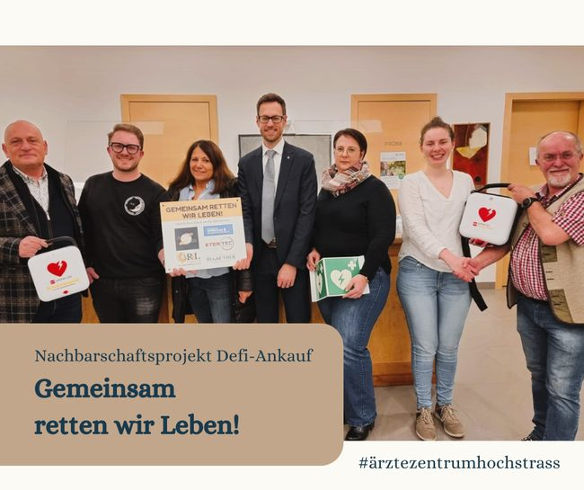
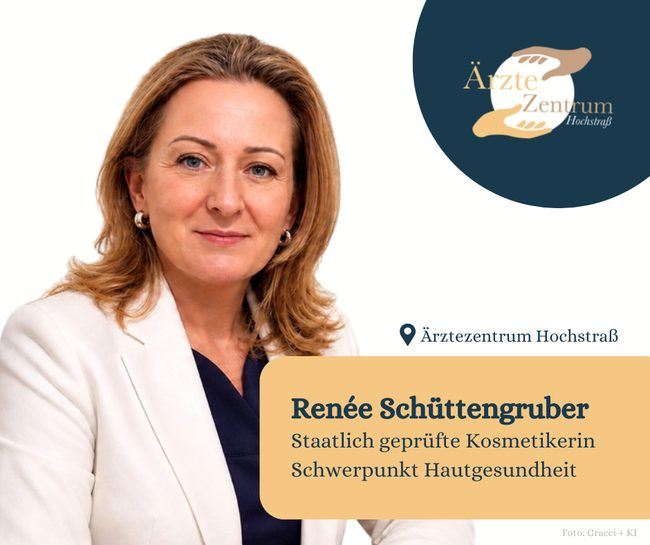
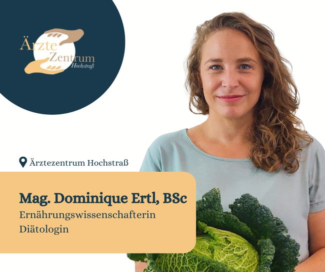

Vorsorgeuntersuchung Herbst 2026
Jetzt Termin vereinbaren
Für freie Kapazitäten im Oktober und November kontaktieren Sie bitte unser Team unter 02773 43603 oder über das Terminformular.
Mehr dazu: Gesundenuntersuchung bei Dr. Mischkounig
Ein interdisziplinäres Team aus rund 20 Wahlärzt:innen, Therapeut:innen und Gesundheitsdienstleister:innen unterschiedlicher Fachrichtungen ist gerne für Sie da.
Direkt an der A21 nähe Knoten Steinhäusl, Abfahrt Hochstraß. Termine vereinbaren Sie über unser Rezeptionsteam – oder ab sofort mit dem Terminformular für alle Ordinationen.

Jetzt Termin vereinbaren
Für freie Kapazitäten im Oktober und November kontaktieren Sie bitte unser Team unter 02773 43603 oder über das Terminformular.
Mehr dazu: Gesundenuntersuchung bei Dr. Mischkounig
Eine Gelegenheit am Wochenende
Noch einzelne freie Termine: Massage, Kosmetik, Psychotherapie, Schilddrüsen-Check, Diabetes-Check, internistische Abklärungen inklusive EKG und Hautarzt-Check.
Tipp: Wir koordinieren mehrere Termine an einem Tag
Yoga, Atem & Meditation mit Arno Hollerer
Jeweils Mittwochabend, einzeln einbuchbar (EUR 22,–) oder als Blockkarte. Begrenzte Teilnehmeranzahl, Einstieg jederzeit möglich.
Motto: Achtsam bewegt und entspannt in den Feierabend
Fachärzt:innen, Therapeut:innen und Gesundheitsdienstleister:innen an einer Adresse – damit Befunde, Zweitmeinung und Therapie nicht quer durchs Land verteilt sind.

Christine Hiegesberger, MA führt das Ärztezentrum gemeinsam mit dem bestehenden Team weiter – mit Erfahrungen aus Wirtschaft, Gesundheitsförderung und Prävention.
Zur Geschichte des Hauses →
Renée Schüttengruber, staatlich geprüfte Kosmetikerin mit Schwerpunkt Hautgesundheit: Naturkosmetik, Detox und Tiefenreinigung, Anti-Aging, Needling und Hautstraffung.
Angebote ansehen →
Mag. Dominique Ertl, BSc, Ernährungswissenschafterin und Diätologin – mit BIA-Messungen und Schwerpunkt Darmgesundheit.
Zu den Therapeut:innen →Wie immer gilt: Zusätzliche Öffnungszeiten ergeben sich durch die Anwesenheit unserer Ärzt:innen. Diese sind bitte telefonisch zu erfragen. Abweichende Zeiten rund um Feiertage oder Ferien kündigen wir gesondert an.
Kontaktieren Sie unser Rezeptionsteam unter 02773 43603. Außerhalb der Öffnungszeiten sprechen Sie bitte auf die Mailbox oder fordern Sie einen Rückruf an – bitte mit Name, Telefonnummer und Stichwort zum Anliegen.
Sollte es Ihnen nicht möglich sein, Ihren vereinbarten Termin wahrzunehmen, informieren Sie bitte unser Rezeptionsteam mindestens 24 Stunden vorher. Terminstornos innerhalb von 24 Stunden sowie unentschuldigtes Nichterscheinen müssen mit 100 % Behandlungshonorar in Rechnung gestellt werden.
Ein Auszug der bekannten Ordinationstage. Termine finden grundsätzlich nach Vereinbarung statt – die aktuellen Zeiten erfahren Sie am schnellsten an der Rezeption.
| Tag | Ärzt:innen | Therapie & Gesundheit |
|---|---|---|
| Montag | DDr. Anastasiya Krusche (Gynäkologie) | – |
| Dienstag | Dr. Helmut Klein (Urologie) | Andreas Schweighofer (Physiotherapie) |
| Mittwoch | DDr. Anastasiya Krusche (Gynäkologie), OA Dr. Armin Weiser (HNO) | Andreas Schweighofer (Physiotherapie), abends Yoga mit Arno Hollerer |
| Donnerstag | Dr. Stefan Egger (Rheumatologie), Dr. Magdalena Mischkounig (meist DO) | Andreas Schweighofer (Physiotherapie), Mag. Ute Pfaffstaller (Heilmassage) |
| Freitag | nach Vereinbarung | Andreas Schweighofer (Physiotherapie), Mag. Ute Pfaffstaller (Heilmassage) |
| Samstag | Dr. Helmut Klein (Urologie), Univ. Doz. Dr. Theodor Wanke (Lungenheilkunde) | Ordi-Samstag am 12.09.2026 mit erweitertem Angebot |